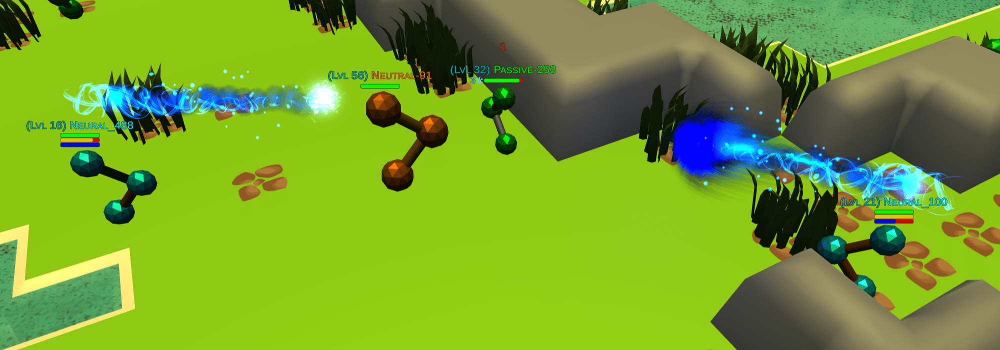
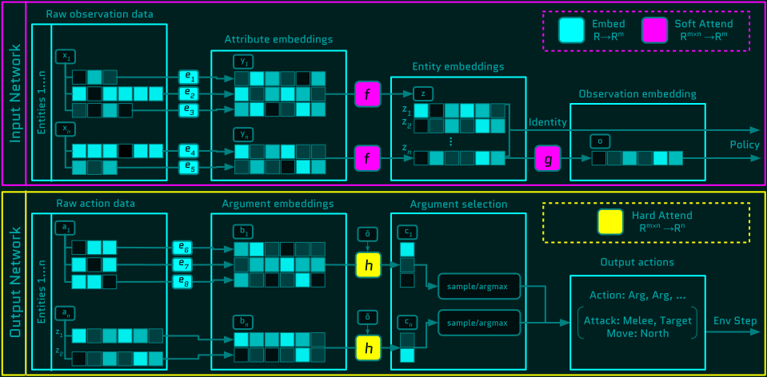
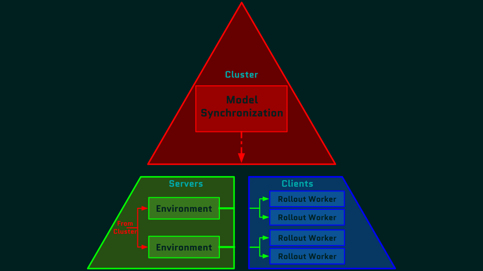
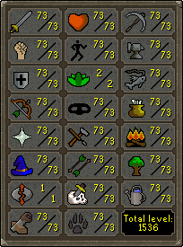

 Welcome to the Platform!¶
Welcome to the Platform!¶
Neural MMO [Demo Video] [Github] is a massively multiagent AI research environment inspired by Massively Multiplayer Online Role Playing Games (MMORPGS or MMOs). The long-term goal of our platform is to enable artificial agents to scale to real world intelligence. MMOs are complete macrocosms featuring thousands of agents per persistent world, diverse skilling systems, local and global economies, complex emergent social structures, and ad-hoc high stakes single and team based conflict. Simulating the physical processes of evolution on Earth is computationally infeasible, but we can construct a reasonable and efficient facsimile: we consider MMOs the best proxy for the real world among human games.
Getting Started: Neural MMO extends the OpenAI Gym API to support additional environment complexity: persistence, large/variable agent populations, and hierarchical observation/action spaces. The quickest way to dive in is:
1: Read the Quickstart tutorials
2: Skim the Environment, IO, and Infrastructure modules of the API Reference
3: Hack on your own projects using the /projekt demo model as starter code
4: Join our Discord community for help and discussion!
5: Contribute to the platform! Neural MMO is an active open source project
I actively review issues and pull requests. Discord is the best way to contact me
Overview¶
Agents that scale to the complexity of the real world is one statement of general intelligence. A key perspective of this project is to decouple this task into research and engineering subproblems that, taken together, equal the original objective. The project is divided into four modules along these lines. See Ideology if you find this sort of macro view interesting.
Engineering |
Research |
|---|---|
|
|
|
|
Research¶
Agents that scale to the complexity of their environment
 Trinity: Three layer synchronous + asynchronous distributed computation framework based on Ray and Ascend
Trinity: Three layer synchronous + asynchronous distributed computation framework based on Ray and Ascend
 Ethyr: Research utilities and prebuilt models. Acts as a “contrib” – submit PRs with your own tools!
Ethyr: Research utilities and prebuilt models. Acts as a “contrib” – submit PRs with your own tools!
Engineering¶
Environments that scale to the complexity of the real world
 Blade: The core game environment including the extended OpenAI Gym external API
Blade: The core game environment including the extended OpenAI Gym external API
 Embyr: 3D Unity3D based game client. Maintained as an independent repository and not used during training.
Embyr: 3D Unity3D based game client. Maintained as an independent repository and not used during training.
Quickstart¶
Installation: The master branch will always contain the latest stable version. Each previous version release is archieved in a separate branch. Other branches are for contributors and developers only: they are not bleeding edge builds and may be flammable.
#Download the Neural MMO environment
#We assume a Python 3.7+ setup with Anaconda pip
git clone https://github.com/jsuarez5341/neural-mmo && cd neural-mmo
#Installation options:
# --no-client: Omit the Embyr 3D Unity client
# --virtual-env: Install in a virtual env
python scripts/setup.py
#Run the pretrained demo model to test the installation
python Forge.py --render
#Open the client in a separate terminal
#You will need to rerun this if you restart the environment
./client.sh
Tutorials¶
Training from scratch¶
Next, we will get familiar with the baseline parameters and train a model from scratch. Open up experiments.py, which contains all of the training configuration options. First, we’ll disable the test mode flags:
LOAD = False
TEST = False
BEST = False
Our baseline was trained on a 12 core machine. Your CPU probably has fewer cores. To use 4 cores instead:
NGOD = 4
You may also want to reduce the batch size (CLUSTER_UPDATES). Now we can train a model:
python Forge.py
If you leave it running, you will see the reward steadily increasing:

This smoothed training curve was produced using the (beta) logging library. The baseline model gets to >28 average lifetime after training for several days on 12 cores. Once you are satisfied, enable testing flags and run with rendering enabled to view learned policies. As a sanity check, agents typically learn not to run into lava first, as indicated by the steep initial learning curve slope.
The IO API¶
On the surface, Neural MMO follows the OpenAI Gym API:
#Core environment and configuration
from forge.blade.core import Realm
from experiments import Experiment, Config
#Define an experiment configuration
config = Experiment('demo', Config).init(TEST=True)
#Initialize the environment and policy
env = Realm(config)
obs, rewards, dones, infos = env.reset()
#Run policy
actions = somePolicy(packet)
#Submit actions
nxtObs, rewards, dones, info = env.step(actions)
#(s, a, r) tuple + rollout boundaries
print(obs, actions, rewards, dones)
However, the actual contents of obs, rewards, dones, info is nonstandard by necessity. Gym isn’t built for multiagent environments – and certainly not for ones with complex hierarchical observation and action spaces:

You’re free to develop your own methods for handling these, but we’ve already done all that work for you. Let’s make use of the core IO libraries:
#Core API
from forge.blade.core import Realm
from forge.blade import IO
#Demo baselines
from experiments import Experiment, Config
#Define an experiment configuration
config = Experiment('demo', Config).init(TEST=True)
#Initialize the environment and policy
env = Realm(config)
obs, rewards, dones, infos = env.reset()
#Process observations
packet, _ = IO.inputs(obs, rewards, dones, config)
#Run policy (fills packet object)
somePolicy(packet)
#Select actions
actions = IO.outputs(packet)
#Submit actions
nxtObs, rewards, dones, info = env.step(actions)
#(s, a, r) tuple + rollout boundaries
print(obs, actions, rewards, dones)
We’re almost done. The IO API handles batching, normalization, and serialization. The only remaining issue is that somePolicy must handle hierarchical data and variable action spaces. Ethyr provides prebuilt IO networks:

This pair of attentional networks is responsible for flattening the input space and indexing the variable length action space. In particular, a is an embedding layer, f and g are soft attention subnetworks, and h is a hard attention subnetwork. You can read more about these in the v1.3 whitepaper. Let’s use these modules to make this example runnable:
#Core API
from forge.blade.core import Realm
from forge.blade import IO
#Demo baselines
from experiments import Experiment, Config
from forge.ethyr.torch.policy import baseline
#Define an experiment configuration
config = Experiment('demo', Config).init(TEST=True)
#Initialize the environment and policy
env = Realm(config)
obs, rewards, dones, infos = env.reset()
policy = baseline.IO(config)
#Process observations
packet, _ = IO.inputs(obs, rewards, dones, config)
flat, lookup = policy.input(packet)
#Select actions
policy.output(packet, flat, lookup)
actions = IO.outputs(packet)
#Submit actions
nxtObs, rewards, dones, info = env.step(actions)
#(s, a, r) tuple + rollout boundaries
print(obs, actions, rewards, dones)
And there you have it! You can insert your own model between the input and output networks without having to deal with nonstandard structured data. However, this only covers the forward pass. We haven’t discussed rollout collection, training, or any population based methods. For a fully featured and well documented example, hop over to /projekt in the environment repo.
Distributed computation with Ascend¶
Ascend is a lightweight wrapper on top of the excellent Ray distributed computing library. The core paradigm is to model each layer of hardware – cluster, server, core – by subclassing the Ascend object. Let’s first implement a remote client (Sword) without using Ascend. In order to keep track of several remote clients, we will also create a server (God).
import ray, time
@ray.remote
class Sword:
def __init__(self, idx):
self.idx = idx
def step(self):
time.sleep(1)
return self.idx
class God:
def __init__(self, n=5):
self.disciples = [Sword.remote(i) for i in range(n)]
def step(self):
clientData = ray.get([d.step.remote() for d in self.disciples])
print(clientData) #[0, 1, 2, 3, 4]
if __name__ == '__main__':
ray.init()
God().step()
Ascend enables us to do all of this without manually writing loops over hardware:
from forge.trinity.ascend import Ascend
import ray, time
@ray.remote
class Sword:
def __init__(self, idx):
self.idx = idx
def step(self):
time.sleep(1)
return self.idx
class God(Ascend):
def __init__(self, n=5):
super().__init__(Sword, n)
def step(self):
clientData = super().step()
print(clientData) #[0, 1, 2, 3, 4]
if __name__ == '__main__':
ray.init()
God().step()
The source is only a few hundred lines and isn’t very useful in toy examples. Ascend really shines in more complex environments that already have too many moving parts:
from forge.trinity.ascend import Ascend, runtime, waittime
import ray, time
@ray.remote
class Sword(Ascend):
def __init__(self, idx):
super().__init__(None, 0)
self.idx = idx
@runtime
def step(self, coef, bias):
time.sleep(1)
return coef*self.idx + bias
class God(Ascend):
def __init__(self, n=5):
super().__init__(Sword, n)
def update(self):
time.sleep(1)
@runtime
def step(self):
asyncHandles = super().distribute(
2,
[4, 3, 2, 1, 0],
shard=(False, True))
self.update()
clientData = super().synchronize(asyncHandles)
print(clientData) #[4, 5, 6, 7, 8]
if __name__ == '__main__':
ray.init()
God().step()
Like before, we have a server interacting with five remote clients. This time, the coef argument is shared among clients while the bias argument is sharded among them. Additionally, we are using the computation time of the clients to perform additional work in the server side update() function. And we are also logging performance statistics, specifically time spent performing useful computation vs time spent waiting, for both layers. The Neural MMO demo has a third infrastructure layer for the cluster. Even in this toy example, Ascend is saving us quite a bit of code.
In the full Neural MMO environment, we use three infrastructure layers, each of which subclasses Ascend:

This simulates the traditional MMO computation paradigm in a research setting. Specifically, we run a cluster of servers, each of which simulates a copy of the environment and distributes agent computations among multiple remote clients. Ascend allows us to implement this framework pythonically in only a few lines of code.
Namesake¶
In formal publications, we refer to our project simply as a (the first) “Neural MMO.” Internally and informally, we call it “Projekt: Godsword” (God-Sword). The name comes from two sources: CD Projekt Red, my personal favorite game dev studio, and OldSchool Runescape, which contains an iconic set of weapons called godswords. The latter is a particularly good model for AI environments; the former is more of a soft flavor inspiration.
Version History¶
The OpenAI only hosts v1.0. My personal Github hosts the latest version in master and all previous versions as separate branches. This documentation page is generated from the latest environment release. Feel free to drop in the Discord #support channel if you are having trouble. You can expect fast fixes to Github issues and even faster replies to Discord PMs.
- v1.3: Prebuilt IO Libraries | [Update Slide Deck]
[Paper] Blade: We have improved and streamlined the previously unstable and difficult to use IO libraries and migrated them here. The new API provides framework-agnostic IO.inputs and IO.outputs functions that handle all batching, normalization, serialization. Combined with the prebuilt IO networks in Ethyr, these enable seamless interactions with an otherwise complex structured underlying environment interface. We have made corresponding extensions to the OpenAI Gym API to support variable length actions and arguments, as well as to better signal episode boundaries (e.g. agent deaths). The Quickstart guide has been updated to cover this new functionality as part of the core API.
Trinity: Official support for sharding environment observations across multiple remote servers; performance and logging improvements.
Ethyr: A Pytorch library for dynamically assembling hierarchical attention networks for processing NMMO IO spaces. We provide a few default attention modules, but users are also free to use their own building blocks – our library can handle any well defined PyTorch network. We have taken care to separate this PyTorch specific functionality from the core IO libraries in Blade: users should find it straightforward to extend our approach to TensorFlow and other deep learning frameworks.
Embyr: Agents now display additional information overhead, such as when they are immune to attacks or when they have been frozen in place.
A reasonable 8-population baseline model trained on 12 (old) CPU cores in a day.
Improved and expanded official documentation
New tutorials covering distributed computation and the IO API
The Discord has grown to 80+! Join for active development updates, the quickest support, and community discussions.
- v1.2: Unity Client and Skilling | [Update Slide Deck]
Blade: Skilling/professions. This persistent progression system comprises Hunting, Fishing (gathering skills) and Constitution, Melee, Range, Mage (combat skills). Skills are improved through usage: agents that spend a lot of time gathering resources will become able to gather and store more resources at a time. Agents that spend a lot of time fighting will be able to inflict and take more damage. Additional bug fixes and enhancements.
Trinity: Major new infrastructure API: Ascend – a generalization of Trinity. Whereas v1.1 Trinity implemented cluster, server, and node layer APIs with persistence, synchronous/asynchronous, etc… Ascend implements a single infrastructure “layer” object with all the same features and more. Trinity is still around and functions identically – it has just been reimplemented in ~10 lines of Ascend. Additional bug fixes and features; notable: moved environment out of Trinity.
Ethyr: Streamlined and simplified IO api. Experience manager classes have been redesigned around v1.2 preferred environment placement, which places the environment server side and only communicates serialized observations and actions – not full rollouts. Expect further changes in the next update – IO is the single most technically complex aspect of this project and has the largest impact on performance.
Embyr: Focus of this update. Full client rewrite in Unity3D with improved visuals, UI, and controls. The new client makes visualizing policies and tracking down bugs substantially easier. As the environment progresses towards a more complete MMO, development entirely in THREE.js was impractical. This update will also speed up environment development by easing integration into the front end.
Baseline model is improved but still weak. This is largely a compute issue. I expect the final model to be relatively efficient to train, but I’m currently low on processing power for running parallel experiments. I’ll be regaining cluster access soon.
Official documentation has been updated accordingly
20+ people have joined the Discord. I’ve started posting frequent dev updates and thoughts here.
- v1.1: Infrastructure and API rework, official documentation and Discord | [Update Slide Deck]
Blade: Merge Native and VecEnv environment API. New API is closer to Gym
Trinity: featherweight CPU + GPU infrastructure built on top of Ray and engineered for maximum flexibility. The differences between Rapid style training, tiered MPI gradient aggregation, and even the v1.0 CPU infrastructure are all minor usage details under Trinity.
Ethyr: New IO api makes it easy to interact with the complex input and output spaces of the environment. Also includes a killer rollout manager with inbuilt batching and serialization for communication across hardware.
Official github.io documentation and API reference
Official Discord
End to end training source. There is also a pretrained model, but it’s just a weak single population foraging baseline around 2.5x of random reward. I’m currently between cluster access – once I get my hands on some better hardware, I’ll retune hyperparameters for the new demo model.
- v1.0: Initial OpenAI environment release | [Blog] [Paper]
Blade: Base environment with foraging and combat
Embyr: THREE.js web client
Trinity: CPU based distributed training infrastructure
Ethyr: Contrib library of research utilities
Basic project-level documentation
End to end training source and a pretrained model
Ideology¶
The dual problem formulation mentioned in the Quickstart guide is core to the guiding ideology of the project. Depending on your own personal conception of where the field is as the moment, this may seem like a practical philosophy, AGI cultism, or anything in between. Regardless, see this Two Pager for a more thorough overview of the project approach and objective.
The discussion of failure modes below is mostly intended to dissuade skepticism, which thus far I’ve found correlates perfectly with lack of familiarity with MMOs. If you are very familiar with MMOs + current AI research and are still skeptical, please contact me on the Discord – I’d love to hear your views.
Failure Modes¶
Evaluation can be somewhat difficult in our setting but is not a major blocker. For smaller experiments, we find population size and resource utilization to be reasonable metrics of success. For larger experiments with sufficient domain randomization, Tournaments (as described in the accompanying paper) allow for cross validation of approaches.
- We are currently aware of three failure cases for the project:
Computational infeasibility
“Agents that scale to their environment” is too hard
“Environments that scale to the real world” is too hard
The first failure case is a serious risk, but is shared among all areas of the field. This project is not uniquely compute intensive – in fact, it is one of few environments where it is straightforward to train reasonable policies on a single CPU. If scale is the main issue here, it is likely shared among most if not all other approaches.
- The second problem is probably most familiar to researchers as exploration. Given a cold start, how can agents bootstrap both to better policies and to better exploration strategies? This is a hard problem, but it is unlikely to kill the project because:
The third problem probably appears most likely to many researchers, but least likely to anyone who has spent a significant amount of time in MMOs. Here is a map of the NYC subway:

Actually, it’s a quest map of Runescape, a particular MMO that our environment is loosely based upon. Each quest is a puzzle in itself, takes anywhere from several minutes to several hours to complete, is part of an interconnected web of prerequisites of other quests, and provides different incentives for completion ranging from equipment to unlockable content to experience in a tightly connected set of skills:

In a massive open world:

The most complex class of games considered to date is MOBAs (Massive Online Battle Arenas, e.g. Dota, Quake CTF), which are round based, take on order of an hour, and are mechanically intensive. Achieving 99 in all skills and acquiring the best gear in Runescape takes, at minimum, several thousand hours. In a tournament setting where attacking other players is allowed everywhere, moment-to-moment gameplay is less important than balancing the risks and rewards of any potential strategy–especially in the presence of hundreds of other players attempting to do the same. There is almost certainly still a complexity gap from MMOs to the real world, but we believe it is much smaller than that in environments currently available.
While our environment is nowhere near the level of complexity of a real MMO yet, it does contain key properties of persistence, population scale, and open-endedness. As agents begin to reach the ceiling of the current environment, we plan on continuing development to raise the ceiling.
Authorship, License, Disclaimer¶
I, Joseph Suarez, am the primary author of Neural MMO. I plan to continue development for at least the duration of my EECS PhD at MIT or until someone convinces me that there is a better way to solve AGI. Everything written in the source and documentation is my own opinion. I do not speak for OpenAI, MIT, Clare, Phillip, Igor, or anyone else involved in the project.
- 2019 (fall): Neural MMO development continues at MIT. as the main project of my PhD
I am continuing my role as the primary developer
Phillip Isola resumes project oversight as my adviser
We are beginning to get open source contributions
- 2018 (fall): Independent development results in v1.1 and v1.2:
I ran the project solo. These versions are derivative works and are MIT sublicensed in my name
- 2018 (spring): Neural MMO development continues during a 6-month internship at OpenAI, culminating in the v1.0 environment (MIT licensed to OpenAI) and THREE.js client (MIT licensed to Joseph Suarez and Clare Zhu) release:
I continued my role as the primary developer
Yilun Du assisted with running experiments and particularly in setting up tournaments for the v1.0 release
Phillip Isola and Igor Mordatch managed and advised the project
The v1.0 environment is registered to OpenAI and available under the MIT license
The legacy THREE.js client was developed independently as a collaboration between myself and Clare Zhu. It was originally created as follow-up work for the paper and blog post, but we ended up merging it in. This is also the reason that the project is split into two repositories. It is registered to us jointly and is available under the MIT license
- 2017 (summer): Neural MMO development begins:
I started Neural MMO as an independent side project
I (Joseph Suarez) retain ownership of this smaller original code base and game kernel, along with associated ideas. I created these before my affiliations with OpenAI and MIT
- Open source contributors, listed by time since latest contribution. Discord handle have been used for individuals who have not granted explicit permission to display their real names:
Jack Garbus: Major contributions to the logging framework, feedback on the documentation and tutorials
@tdimeola: Feedback on the documentation and tutorials
@cehinson: Mac build of the Unity3D client
Assets¶
Some assets used in this project belong to Jagex, the creators of Runescape, such as
We currently use them for flavor as an homage to the game that inspired the project. We believe these fall under fair use as a not-for-profit project for the advancement of artificial intelligence research – however, we are more than happy to remove them upon request. We do own the 2D and 3D files for agents, represented by three neurons.